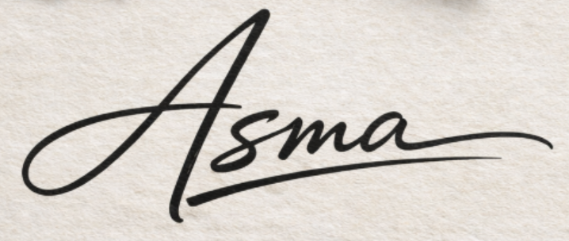

ASMA AZREUG
yazar tercüman gezgin🌍

yazar tercüman gezgin🌍


Asma Azreug yeminli bir tercümandır. Arapça, Fransızca ve Türkçeyi yalnızca akademik düzeyde değil, günlük yaşamın doğal akışı içinde de son derece akıcı ve etkili biçimde kullanmaktadır. Farklı kültürler arasında kurduğu güçlü bağ sayesinde, bir dilden diğerine yalnızca kelimeleri değil; anlamı, duyguyu, niyeti ve bağlamı da başarıyla aktarmaktadır. Tercümanlık çalışmalarında resmî görüşmelerden kültürel etkinliklere, edebî metinlerden birebir iletişim süreçlerine kadar geniş bir alanda güven veren bir yaklaşım sergilemektedir. Özellikle Arapça, Fransızca ve Türkçe arasında yaptığı çevirilerde dilin inceliklerine hâkimiyeti, anlatım gücü ve doğru ifade becerisiyle öne çıkmaktadır. Disiplinli çalışma anlayışı, dikkatli yaklaşımı ve iletişim yeteneği sayesinde, bulunduğu her ortamda diller arasında sağlam bir köprü kurabilen Asma Azreug, tercümanlığı yalnızca teknik bir iş olarak değil, aynı zamanda kültürler arası anlayışı güçlendiren önemli bir sorumluluk olarak görmektedir.